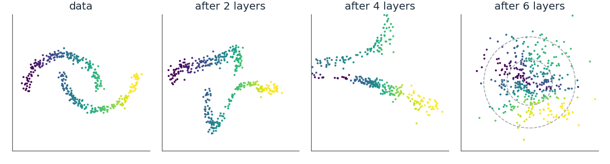
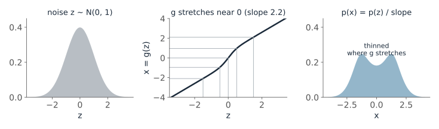
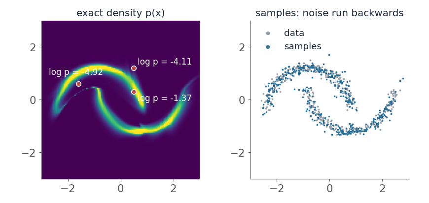

The VAE generates and gives a lower bound on \log p(\text{image}) (the ELBO).
The GAN generates sharp images and gives no probability at all.
Often we need the number itself: how typical is this cell? (anomaly detection), which of two models fits the data better?, a prior for an inverse problem.
A normalising flow (Dinh et al., 2015; 2017) gives the exact\log p(x) and samples, from one network that can be run in both directions.
The idea: bend the data into a Gaussian

An invertible map f takes each data point x to z = f(x); trained so that the z’s look like \mathcal N(0, I).
Sampling: draw z \sim \mathcal N(0, I) and run the map backwards, x = f^{-1}(z).
Density: how probable is x? Look up z = f(x) in the Gaussian, and correct for the stretching.
Change of variables in 1D
Push noise z \sim \mathcal N(0, 1) through an increasing map x = g(z).
Where gstretches (slope 2.2 at z = 0), the same probability is spread over a longer stretch of x: the density drops by that factor.
p(x) = \dfrac{p(z)}{\text{slope of } g} at z = g^{-1}(x).
Example: x = 2z + 1: p(x) = \tfrac12\,\mathcal N\big(\tfrac{x - 1}2\big), the density of \mathcal N(1, 2^2).

The math: change of variables
For an invertible, differentiable f: \mathbb R^n \to \mathbb R^n with z = f(x) and z \sim p_Z:
The Jacobian is triangular: its determinant is the product of the diagonal. The complicated block \partial y_2/\partial x_1 never matters.
Inverse: x_1 = y_1, x_2 = (y_2 - t(y_1)) \odot e^{-s(y_1)}: one forward pass of s, t.
By hand: s = \ln 2, t = 1, x = (0.5, 1): y = (0.5, 3), \log|\det J| = \ln 2, so p_X(0.5, 1) = 2\,\mathcal N((0.5, 3); 0, I) = 0.0031.
Training: maximum likelihood
The map is trained by making the training data probable: minimise the mean of
-\log p(x) = \tfrac12\|f(x)\|^2 + \log 2\pi - \sum_{\text{layers}} s.
The first term pulls every point towards the centre of the Gaussian; the second (-\sum s) stops the map from simply shrinking everything to 0: shrinking costs log-determinant.
One loss, going down, as for an ordinary network; no game.
for every batch of training points x:
z = x; logdet = 0
for every layer k: # data → noise
(s, t) = net_k(the kept half of z)
changed half of z = changed half · exp(s) + t; logdet += sum of s
loss = mean(½ |z|² + log 2π − logdet)
gradient step on all the nets' weights (backpropagation)
Try it: a flow layer by layer
Density and samples

Left: the exact density, computed point by point with the change of variables. It integrates to 1 (checked numerically: 0.9999 for the flow of the coding exercise).
Right: samples, Gaussian noise run backwards.
A point on a moon: \log p = -1.37. Off the moons: -4.11, -4.92. Far away, (2.5, 2.5): -220.
Uses
Density estimation: the probability of a measurement vector (cell features, a spectrum, a trajectory), with no histogram binning.
Anomaly detection: flag cells with low \log p under a flow trained on normal cells.
Sampling: realistic synthetic data in one backward pass.
Comparing models by held-out likelihood; and as a prior in inverse problems (the regularised estimate with -\log p as the penalty).
As parts of other models: a flexible posterior inside a VAE, a learned prior over latent codes.
Limits
Topology: a flow is a smooth invertible map of a Gaussian, so it cannot tear one blob into two separate moons. It leaves thin bridges of low density between them (6 of the 400 samples of the figure lie more than 0.3 away from the data).
Same size in and out: no compression; for images every layer works on all 10^6 numbers.
Likelihood is not typicality: flows trained on one image collection can give higher likelihood to images of another, simpler kind (Nalisnick et al., 2019). Smooth, low-detail images are “easy” to code. Test an anomaly score on known anomalies before trusting it.